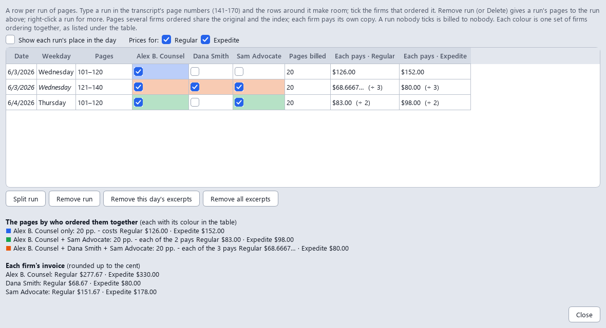

Fills in the UCS Court Reporter Minute Agreement Form and the MOFR for you, makes invoices from your transcripts, keeps a shared trial's run sheet, and keeps track of what you billed and what was paid. Drop in what the attorney sent, check the details, and get finished PDFs.
Download for Windows View on GitHubFree and open source (AGPL). Windows 10 or 11. No administrator rights needed.
Formerly DjinnItAgreementForm. Updating from it keeps your settings, rate sheets, records and run sheets.
Every private minute order starts with the same form: court, part, judge, case name, index number, dates, type of proceeding, rate, attorney and your own details. All of that is already sitting in the transcript, the invoice, the calendar photo or the e-mail. This app reads it and types it in, so you only check it.
Batch mode reads any number of documents and sorts them into one job per case and date. A transcript and its invoice make one form, not two. Two days of the same case make two jobs, but Generate all gives each firm one invoice and one minute agreement for all the days it ordered, and the trial one MOFR (Settings → Options switches back to forms for each day). Tick the jobs you want and press Generate all: the preview shows every file and the math first, and nothing is saved until you say so. A ⚠ next to a job means something to check; hover over it to see what.


The court's own fillable form, filled in, with "per email" on the attorney line if you like, and your signature picture on the court reporter line. A trial's days in a row go on it as one range, 9/28/2026–10/2/2026, so a long trial still fits. A clean re-typeset version and the original scan are available too. Sample shown uses made-up names.

Drop a transcript PDF and tick Invoice. The page count leaves out the word index printed after the transcript, and the line under it says so: "Transcript pages 378–460 · excludes the 13 word-index pages after them". It is counted four ways (up to the index, by the line numbers, by the printed page numbers, and the index found from the end); if they disagree, or the index would be more than a quarter of the PDF, the field turns amber and tells you why. The page count and your rate sheet price the original, each party's copy and e-mailed copy, and for long transcripts an index for each party, plus one for the judge that the parties split. Whether there is an index is decided on the whole transcript, every reporter's pages (50 pages or more to start with): your 45 pages of an 83-page transcript get one, charged on your 45. Typed fewer pages in Est. number of pages than the transcript has, and that would change it (40 of 83, say)? Generate asks you instead of deciding, and remembers your answer for that day; Peripherals… shows it and lets you change it. The speeds you tick in the Invoice panel (Regular and Expedited to start with) are the ones the invoice offers, each with its turnaround and amount, and with how to pay you. The agreement form names one of them, at one rate per page: Expedited when you offer it, otherwise the slowest. Settings → Invoice changes that rule, and the Speed dropdown under Minute agreement form details changes it for one job. No transcript, just a caption page? Type the pages in Est. number of pages and the invoice bills them. Want the page count, the pages of each day and the charges spelled out for this job? Tick Show granular detail, and choose what it shows. Peripherals… drops the e-mailed copy, or says yes or no to the index, for this job only, and the panel says why there is an index or not: "83 total pages, 50 or more". The notes on the invoice are yours to write, too: place them where you like and have them show only when they apply ("delivered once every party has paid" only when several parties ordered).
Shared the trial with another reporter? The invoice bills only your pages, the ones with your initials at the foot: 65 of a 150-page transcript, say. Whose pages… lets you tick My pages, another reporter's pages, or The whole transcript, and the app asks when it can't tell. Each other reporter you tick gets invoices for their own pages, in their name, with their address and payment details (Settings → Run sheet → Invoices for, or Details…), numbered apart from yours (DS-2026-0001), with file names that say whose they are. Sample shown uses made-up names.
One firm ordered the whole trial, another part of day 1, a third part of that and a stretch of day 2? Excerpts… (next to Parties) lists every day of the case on that invoice in one table. Each row is a run of pages, typed in the transcript's own page numbers (141-170), and the rows around it make room. Tick the firms that ordered each run. Split run cuts a run in two, and Remove run (or the Delete key, or a right-click) gives its pages to the run next to it; Remove this day's excerpts and Remove all excerpts go back to whole days. Each run shows its date and weekday, and each set of firms ordering together has its own colour. As you type, it shows what each run costs each firm at every speed you offer (Prices for: hides a speed), what each group of firms ordering together pays, and each firm's invoice. Pages ordered together split the original and the judge's index, and every firm pays for its own copy, e-mailed copy and index. A run nobody ticks is billed to nobody. The window stays open beside the app and follows what you change there. Sample shown uses made-up names.

Before you generate, the Who ordered what card lists every day the invoice covers, with a row for each attorney: the pages it ordered (every page, or which excerpt), the page numbers printed on them, who else ordered the same pages, and how many of your pages that bills. An attorney not ticked on a day "orders nothing", and when an invoice won't be made yet (a day with nobody ticked, an excerpt to check, whose pages to bill) the card says so in amber. Double-click a row, or click Edit excerpts…, to change it. Generate all asks before it bills a case with a day not decided: go back and decide, or go on without it. Sample shown uses made-up names.


Click Generate, or Generate all for a whole batch, and the app first shows you each form and invoice as it will be saved, a tab for each file, the invoice with the number it will get. Each kind of file has its own tab colour, and the first tab, The math, shows how every amount is reached. Side by side shows every file at once; Ctrl + and Ctrl − (or Ctrl and the mouse wheel) zoom. Many files? Arrows at the end of the tabs, a Files ▾ menu and Ctrl+Tab take you to any of them. Save saves them. Go back saves nothing and takes no invoice number, so you can fix a field and try again. The run sheet, a spreadsheet, is saved with the rest but not shown. Rather skip it? Don't show previews anymore turns it off, and Settings turns it back on. Once the files are saved, Print… sends them to your printer. Sample shown uses made-up names.
Your invoices can stay clean, with just the amounts, and the math is still at hand. The math, the preview's first tab, lays out each amount in tables: By invoice, a row for each charge with its pages, rate and cost, whether each firm splits this cost or pays for its own, and what this firm pays, stretch by stretch of pages ("50 pages ordered by 2 firms … ÷ 2"); or Firms side by side, a column for each firm. It remembers the one you chose, and the Invoice panel has its own link to it before you generate. When several firms share the work, All the firms together checks that what they pay covers it. Copy all copies it as text, a line for each charge, for a reply. With previews off, it comes in a small window after saving: OK, Copy all, Save as PDF… (the tables) for the attorney who asked, or Don't show this anymore (Show the math of each invoice in Settings → Options brings it back). Prefer to have it on file? Settings → Invoice can also save a detailed copy of every invoice, the same invoice number with the full breakdown, ready for when someone asks. Sample shown uses made-up names.

When reporters take turns, each one puts their initials on the pages they write. Run sheet ticks itself when two or more reporters wrote the case's transcripts (and unticks when one did; click it to decide yourself), and the app reads those initials page by page and adds a row per take to the trial's run sheet in Excel: date, reporter, pages written, start and end page, and the witness who took the stand. It finds the trial's run sheet by index number or case name (one trial can have several index numbers) and asks before adding to it. All the days of a trial go on it in one go: if it's open in Excel, you're told to close it before anything is made, so it never ends up missing a day. Filter by reporter to see their pages, or open the By Reporter sheet for everyone's totals. Sample shown uses made-up names.

Records keeps every invoice and form the app made. See totals billed, paid and outstanding for any month, year or firm, with breakdowns by firm and by month. Tick Paid when the money comes in, and if you corrected an amount in an invoice PDF, Change amounts… keeps the totals right. Choose the columns you want: your pages and the transcript's, the excerpt, the speeds offered and the one ordered, whether an e-mailed copy was included, and more, and click a heading to sort. Invoices you made for another reporter are listed too, with their initials under For reporter, but kept out of your totals. Looking for one firm or case? Type it in the search box: a firm, a case, an index number, an invoice number, with Fuzzy to forgive a typo or Regex for exact patterns. Deleted something by mistake? It waits in the Trash for 30 days. Export a report, an Excel workbook or CSV files whenever you like; a CSV copy is always kept up to date in your Documents folder.
Need a corrected invoice, or another day of the same case? Right-click a record and open its job again: the case comes back as you left it. Ticked the wrong invoice paid? Undo (Ctrl+Z) takes it back. Summary… sums up a month or a year (invoices, pages, billed, paid, still owed), and the first time you open Records in a new month it tells you what last month came to. Your records are backed up each day you open the app, and you can go back to any of the last ten days.

Everything runs on your computer. Photos are read with Windows' built-in text recognition. Nothing is uploaded. Once a day the app asks GitHub whether there is a newer version (it sends nothing about you or your cases); you can turn that off in Settings.
Missing or conflicting items (index number, dates, judge) are raised before filling, never silently guessed.
Your name, address, phone, e-mail, rate sheet, copies and signature are set once in Settings. The speeds you offer and what you tick in the Outputs box stay ticked.
The PDFs stay fillable: every value the app typed in, invoice amounts included, can be corrected in a PDF viewer. When it's final, File → Lock finished PDFs saves a locked copy.
Works with Windows' display scaling, and Ctrl + and Ctrl − (or Ctrl and the mouse wheel) make everything bigger or smaller.
Save everything next to your documents, in one folder, or give agreements, invoices, MOFRs and run sheets a folder each.
Rates live in small spreadsheets (CSV) you can edit in Excel: private, city, whatever you charge.
If you use Ollama, an AI helper can read messy photos and e-mails. It is only used when Ollama is installed, and it stays on your machine. Everything it says is checked against the document, and it ticks who ordered only from e-mails and pasted text. Choose the smaller, faster model or the larger, more accurate one in Settings.
File → Export settings saves your details, options and rate sheets as one file; Import settings reads it on the other computer. Giving it to a colleague? Leave your personal details out with one click. A short welcome asks a new user the few things the forms need.
Open the app again, or a PDF with Open with, and the documents go to the window already open, so two windows never save over each other's settings or run sheets.
Press F1 (or Help → How to use) for what the app reads, what it makes, the steps, tips and the keyboard shortcuts.
Read the code, report a problem, or suggest a change on GitHub.
Windows 10 (version 1809, October 2018, or newer) or Windows 11, 64-bit. Not available for Mac or Linux.
Python and everything else the app needs are included. No administrator rights are required.
About 200 MB of disk space. No internet connection is needed to use it.
Reading photos uses Windows' own text recognition, which needs the English language pack. Most PCs already have it. Typed PDFs and e-mails don't need it.
The AI helper needs the free Ollama app and a small model, plus a reasonably modern PC. The app works fine without it.
YinItAgreementForm-Setup-x.y.z.exe.